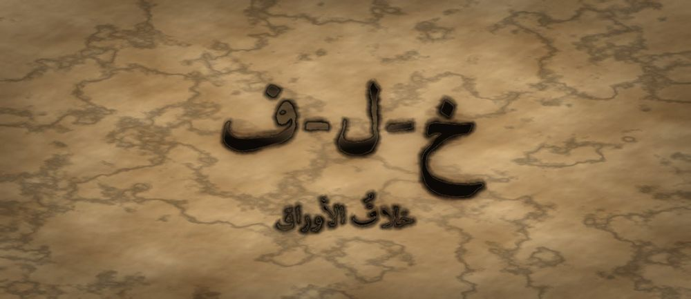

مَطبعةُ جُذور · دبي · MCMXXVI · سِلْسِلَةُ فَنِّ البَيان

مَرحلةُ الأَوْرَاق · الفئة ١٣–١٥ · الجذر خ-ل-ف · الإمام مالك
❦ ✦ ❧
السِّفْرُ ١٣ — خلافُ الأوراق
«أُخالِفُكَ فِي الرَّأْيِ، وَلا أُخالِفُكَ فِي الوُدِّ»

الرِّسَالَةُ الجَوْهَرِيَّة
الِاخْتِلافُ لَيْسَ عَطَبًا فِي العَلاقَةِ، بَلْ عَلامَةُ أَنَّ فِي المَكانِ عَقْلَيْنِ لا عَقْلًا واحِدًا وَصَداهُ. وَالمَهارَةُ أَنْ تُخالِفَ الرَّأْيَ لا الشَّخْصَ: تَذْكُرَ مَوْضِعَ الخِلافِ بِدِقَّةٍ، وَتَعْتَرِفَ بِما عِنْدَ صاحِبِكَ مِنْ حَقٍّ، وَتُبْقِيَ البابَ مَفْتُوحًا.
بِطَاقَةُ هُوِيَّةِ السِّفْر
| المستوى / الدرجة | أَوْراقٌ — وَرَقَتانِ عَلَى غُصْنٍ واحِدٍ (الدرجةُ الثانيةُ في مستوى الأوراقِ) |
| الفئة العمرية | ١٣–١٥ سنة · نطاقُ تداخلٍ يمتدُّ إلى ١٦ |
| الجذر الأساسي | خ – ل – ف · الخِلافُ: أن يقفَ اثنانِ في جهتينِ ويبقى بينَهُما طريقٌ |
| أسرة الجذر | خِلاف · اخْتَلَفَ · مُخْتَلِف · خَلِيفة · مُخالَفة · خَلَف (كلُّها من خ-ل-ف) |
| المحطّة | الخِلافُ — أوّلُ اختبارٍ حقيقيٍّ لمتانةِ الرابطةِ |
| المرساة الحسّيّة | خطُّ الخِلافِ: يقفُ المتعلّمانِ على طرفَي شريطٍ أو خطٍّ مرسومٍ، ثمَّ يخطو كلٌّ منهما بقدمَيْهِ خطوةً واحدةً نحوَ الوسطِ عندَ كلِّ نقطةِ اتّفاقٍ يجدُها |
| الاستعارة | ورقتانِ تنموانِ في جهتينِ متضادّتينِ، وما تزالُ سُويقتاهُما في غصنٍ واحدٍ |
| الشخصيتان الحكيمتان | الإمامُ مالكُ بنُ أنسٍ (أدبُ الخلافِ ورَدُّ العلمِ إلى أهلِهِ) + الجَدّةُ رملة |
| الشخصية الرمزيّة | نورُ الأوراقِ (نفسُها — تنمو) |
| الشخصية المضادّة | العاصِفَةُ العَجُولَةُ — شخصيّةٌ رمزيّةٌ (لا تاريخيّةٌ) تظنُّ أنَّ حَسْمَ الخلافِ اقتلاعُ الطرفِ الآخرِ، ثمَّ تتعلَّمُ أن تُحرِّكَ الأغصانَ بلا اقتلاعٍ |
| مؤشّرُ النموّ (وصفيٌّ للرصدِ لا بوّابةٌ) | يُحدِّدُ موضِعَ الخلافِ بجملةٍ واحدةٍ، ويذكُرُ نقطةَ اتّفاقٍ واحدةً على الأقلِّ |
| مجال CASEL | مهاراتُ العلاقاتِ + اتّخاذُ القرارِ المسؤولِ (Relationship Skills · Responsible Decision-Making) |
| المرجعُ النظريّ | استرشادًا بـ TRT — نَظَرِيَّةِ القراءةِ الملموسةِ · واسترشادًا بأدبيّاتِ إدارةِ النزاعِ المدرسيِّ |
صَاحِبُ السِّفْرِ مِنَ التُّرَاث
مالكُ بنُ أنسٍ (نحو ٧١١–٧٩٥م) إمامُ دارِ الهجرةِ بالمدينةِ، صاحبُ «المُوَطَّأِ» وأحدُ أئمّةِ الفقهِ الأربعةِ. عُرِفَ بورعِهِ في الفتوى وبقولِهِ «لا أَدْرِي» فيما لا يعلمُ، وامتنعَ أن يُحمَلَ الناسُ على كتابِهِ وحدَهُ لأنَّ العلمَ انتشرَ في الأمصارِ. نستلهمُ منهُ هنا: أنَّ سَعَةَ الخلافِ رحمةٌ، وأنَّ «لا أدري» جزءٌ من الشجاعةِ العلميّةِ.
الشَّخْصِيَّةُ المُضَادَّة — العاصِفَةُ العَجُولَةُ — ريحٌ قويّةٌ تمرُّ بالبستانِ فتحسِمُ كلَّ خلافٍ بأن تقتلعَ أحدَ الطرفينِ، وتُسمّي ذلكَ حَسْمًا وشجاعةً. تتعلَّمُ في النهايةِ أنَّ الاقتلاعَ يُنهي الخلافَ ويُنهي معَهُ البستانَ، وأنَّ الريحَ الحكيمةَ تُحرِّكُ الأغصانَ حتى يتلاقحَ الشجرُ ولا تقلعُ جِذْرًا.
الجَذْرُ وَأُسْرَتُه
خ-ل-ف — خِلاف · اخْتَلَفَ · مُخْتَلِف · خَلِيفة · مُخالَفة · خَلَف
الجذرُ (خ-ل-ف) صحيحٌ سالمٌ، وأصلُ معناهُ أن يجيءَ شيءٌ بعدَ شيءٍ أو في جهةٍ غيرِ جهتِهِ؛ ومنهُ «خَلْفٌ» للمكانِ، و«خَلِيفةٌ» لِمَن يجيءُ بعدَ غيرِهِ فيقومُ مقامَهُ. ويُنَبَّهُ المعلّمُ على فرقٍ دقيقٍ: «اخْتَلَفَ» (وزنُ افْتَعَلَ) يقتضي طرفينِ يشتركانِ في الفعلِ فيتغايرانِ، أمّا «خالَفَ» (وزنُ فاعَلَ) فقد يُشرَبُ معنى المعانَدةِ والمعارضةِ القصديّةِ. فالأوّلُ حالٌ طبيعيّةٌ، والثاني موقفٌ.
القِصَّةُ الكَامِلَة
المشهد ١ — خلافٌ صغيرٌ يكبُرُ لأنَّهُ لم يُسَمَّ
في مجلسِ الأوراقِ اجتمعوا ليُقرِّروا أينَ يُقامُ حوضُ الماءِ الجديدُ. قالتْ نورُ: «عِنْدَ الطَّرَفِ الشَّرْقِيِّ.» وقالَ صاحبُها: «بَلْ فِي الوَسَطِ.» وبدأَ الكلامُ هادئًا. ثمَّ سمعَتْ نورُ نفسَها تقولُ: «أَنْتَ دائِمًا تُرِيدُ أَنْ تَكُونَ فِي الوَسَطِ.» فقالَ: «وَأَنْتِ لا يُعْجِبُكِ رَأْيُ أَحَدٍ.» وفي دقيقتينِ لم يعُدِ الكلامُ عن الحوضِ أبدًا. صارَ عن نورَ وعنهُ، وعن أشياءَ قديمةٍ من الشهرِ الماضي. وانفضَّ المجلسُ بلا قرارٍ، ومشى كلُّ واحدٍ في جهةٍ. جلسَتْ نورُ تُفكِّرُ: «كُنَّا نَخْتَلِفُ فِي مَكانِ حَوْضٍ... فَكَيْفَ صِرْنا نَخْتَلِفُ فِي بَعْضِنا؟» ولاحظَتْ شيئًا: في اللحظةِ التي قالتْ فيها «أَنْتَ دائِمًا»، انتقلَ الخلافُ من الرأيِ إلى الشخصِ. كلمةٌ واحدةٌ نقلَتْهُ. وما تزالُ الأرضُ فارغةً بلا حوضٍ.
المشهد ٢ — العاصفةُ العجولةُ تعرِضُ الحَسْمَ
هبَّتْ في المساءِ العاصِفَةُ العَجُولَةُ، فمالَتِ الأغصانُ كلُّها إلى جهةٍ واحدةٍ. قالتْ لنورَ: «ما أَطْوَلَ صَبْرَكِ عَلَى هَذا العَبَثِ! الخِلافُ مَرَضٌ وَأَنا دَواؤُهُ: أَمُرُّ فَأَقْتَلِعُ الطَّرَفَ الأَضْعَفَ، فَيَبْقَى رَأْيٌ واحِدٌ وَيَسْتَرِيحُ البُسْتانُ.» وكانتِ العاصفةُ تخافُ في داخلِها شيئًا: أنَّها لا تعرفُ أن تقفَ؛ فإن هدأَتْ ظنَّتْ أنَّها لم تعُدْ شيئًا. جرَّبَتْ نورُ طريقتَها في اليومِ التالي: رفعَتْ صوتَها، وقاطعَتْ، وأتْبَعَتْ كلَّ كلمةٍ بأقوى منها، حتى سكتَ الجميعُ ومُرِّرَ رأيُها. وحُفِرَ الحوضُ في الطرفِ الشرقيِّ. ولمَّا وقفَتْ عندَهُ في المساءِ وحدَها، وجدَتْهُ حوضًا صحيحًا في مكانٍ صحيحٍ... ولم يأتِ أحدٌ ليملأَهُ. قالتْ: «رَبِحْتُ الرَّأْيَ، وَخَسِرْتُ الأَيْدِيَ الَّتِي تَحْمِلُ الماءَ.»
المشهد ٣ — الإمامُ مالكٌ وسَعَةُ الخلافِ
جاءَتِ الجَدّةُ رملةُ ومعَها ذِكْرُ رجلٍ من أهلِ المدينةِ: الإمامِ مالكِ بنِ أنسٍ. قالتْ: «يا نُورُ، هَذا رَجُلٌ جاءَهُ مَنْ أَرادَ أَنْ يَحْمِلَ النَّاسَ جَمِيعًا عَلَى كِتابِهِ وَحْدَهُ، فَأَبَى وَقالَ إِنَّ العِلْمَ قَدْ تَفَرَّقَ فِي البِلادِ وَعِنْدَ كُلِّ قَوْمٍ ما بَلَغَهُمْ. وَكانَ إِذا سُئِلَ عَمَّا لا يَعْلَمُ قالَ: لا أَدْرِي — وَهُوَ إِمامٌ يُشارُ إِلَيْهِ.» قالتْ نورُ: «أَلَيْسَ الِاخْتِلافُ ضَعْفًا يا جَدَّةُ؟» قالتِ الجَدّةُ: «الِاخْتِلافُ فِي الرَّأْيِ عَلامَةُ أَنَّ فِي المَجْلِسِ عَقْلَيْنِ. وَإِنَّما الضَّعْفُ أَنْ تَنْتَقِلِي مِنَ الرَّأْيِ إِلَى الشَّخْصِ. وَلِذَلِكَ ثَلاثُ كَلِماتٍ تَحْرُسُ الخِلافَ: قُولِي أَرَى بَدَلَ الحَقِيقَةُ أَنَّ، وَقُولِي فِي هَذِهِ المَسْأَلَةِ بَدَلَ أَنْتَ دائِمًا، وَقُولِي مَعَكَ حَقٌّ فِي كَذا قَبْلَ أَنْ تَذْكُرِي مَوْضِعَ خِلافِكِ.»
المشهد ٤ — خطُّ الخِلافِ
رسمَتِ الجَدّةُ رملةُ خطًّا في التُّرابِ، ودعَتْ نورَ وصاحبَها أن يقفَ كلٌّ منهما على طرفٍ. ولم تدفعْ أحدًا ولم تمسَّ أحدًا؛ قالتْ فقط: «قِفا حَيْثُ تَشاءانِ، وَلْيَتَحَرَّكْ كُلٌّ بِقَدَمَيْهِ هُوَ.» ثمَّ قالتْ: «كُلَّما ذَكَرَ أَحَدُكُما شَيْئًا يَتَّفِقانِ عَلَيْهِ فِعْلًا، خَطا خُطْوَةً واحِدَةً إِلَى الوَسَطِ.» قالَ صاحبُها: «نَتَّفِقُ أَنَّ البُسْتانَ يَحْتاجُ حَوْضًا.» فخطا كلاهُما. قالتْ نورُ: «وَنَتَّفِقُ أَنَّ الأَطْفالَ الصِّغارَ يَجِبُ أَنْ يَصِلُوا إِلَيْهِ بِلا خَطَرٍ.» فخطَوا. قالَ: «وَنَتَّفِقُ أَنَّنا نُرِيدُ أَنْ يَنْتَهِيَ هَذا اليَوْمَ.» فخطَوا. فإذا هما قريبانِ، وبينَهُما خطوتانِ فقط. فقالتِ الجَدّةُ: «هَذانِ ما بَقِيَ. هَذا هُوَ خِلافُكُما الحَقِيقِيُّ — خُطْوَتانِ، لا بُسْتانٌ كامِلٌ. فَتَكَلَّما فِيهِما وَحْدَهُما.» فنظرا إلى الأرضِ بينَهُما وضحِكا؛ فقد كانا يظنّانِ الخلافَ أوسعَ من ذلكَ بكثيرٍ.
المشهد ٥ — قرارٌ بلا مغلوبٍ، والعاصفةُ تتعلَّمُ أن تُحرِّكَ
قالتْ نورُ: «أَرَى الشَّرْقِيَّ لِأَنَّ الأَرْضَ هُناكَ لا تَغْرَقُ. وَمَعَكَ حَقٌّ أَنَّ الوَسَطَ أَقْرَبُ لِلْجَمِيعِ — لَمْ أَكُنْ أَنْتَبِهْ لِهَذا.» فقالَ: «وَأَنا لَمْ أَكُنْ أَعْرِفُ أَمْرَ الغَرَقِ. فَمَا رَأْيُكِ فِي الشَّرْقِيِّ مَعَ مَمَرٍّ مِنَ الوَسَطِ إِلَيْهِ؟» قالتْ نورُ: «هَذا رَأْيٌ لَمْ يَكُنْ عِنْدَ أَحَدٍ مِنَّا قَبْلَ قَلِيلٍ.» واتَّفقا. ثمَّ قالَ صاحبُها: «وَإِنْ لَمْ نَتَّفِقْ يَوْمًا؟» قالتْ نورُ: «نَقُولُ: اخْتَلَفْنا، وَنَبْقَى عَلَى غُصْنٍ واحِدٍ.» وكانتِ العاصِفَةُ العَجُولَةُ تسمعُ من فوقِ الشجرِ، فقالتْ في حَيْرةٍ: «وَأَنا؟ إِنْ لَمْ أَقْتَلِعْ فَلِمَ أَهُبُّ أَصْلًا؟» فقالتْ لها الجَدّةُ رملةُ: «هُبِّي بِرِفْقٍ. فَإِنَّ الرِّيحَ هِيَ الَّتِي تَنْقُلُ اللِّقاحَ مِنْ شَجَرَةٍ إِلَى شَجَرَةٍ، وَلَوْلاها ما أَثْمَرَ البُسْتانُ. إِنَّما تُفْسِدُ الرِّيحُ إِذا اقْتَلَعَتْ.» فهبَّتِ العاصفةُ في تلكَ الليلةِ هُبوبًا لَيِّنًا، فتحرَّكَتِ الأغصانُ ولم يسقطْ غصنٌ. وفي الصباحِ كانَ في البستانِ زهرٌ لم يكنْ بالأمسِ.
المشهد ٦ — صَمْتُ السُّؤالِ الجَسَدِيِّ
وقفَتْ نورُ على خطِّ التُّرابِ آخِرَ النهارِ ونظرَتْ إلى الخطوتينِ الباقيتينِ. وهذا تدريبُكَ أنتَ الآنَ: «ضَعْ خَيْطًا أَوْ شَرِيطًا عَلَى الأَرْضِ. قِفْ عَلَى طَرَفِهِ. فَكِّرْ فِي خِلافٍ صَغِيرٍ عِنْدَكَ. ثُمَّ اذْكُرْ فِي سِرِّكَ ثَلاثَةَ أَشْياءَ تَتَّفِقُ فِيها مَعَ الطَّرَفِ الآخَرِ فِعْلًا، وَاخْطُ عِنْدَ كُلِّ واحِدَةٍ خُطْوَةً واحِدَةً بِقَدَمَيْكَ. ثُمَّ قِفْ وَانْظُرْ كَمْ بَقِيَ مِنَ الخَطِّ. ثُمَّ قُلْ جُمْلَةً واحِدَةً: خِلافِي مَعَهُ هُوَ فِي... فَقَطْ.» تَخْطُو بِقَدَمَيْكَ أَنْتَ، وَلا يَدْفَعُكَ أَحَدٌ وَلا يَمَسُّكَ. وَإِنْ صَعُبَ عَلَيْكَ الوُقُوفُ فَحَرِّكْ إِصْبَعَكَ عَلَى الخَيْطِ، فَالمَسافَةُ هِيَ الدَّرْسُ لا الخُطْوَةُ. وَتَذَكَّرْ أَنَّ العاصِفَةَ لَمْ تَفْقِدْ قُوَّتَها حِينَ رَفَقَتْ، بَلْ صارَتْ رِيحًا تَنْقُلُ اللِّقاحَ فَأَزْهَرَ البُسْتانُ فِي الصَّباحِ.
النُّسْخَةُ المُخْتَصَرَة
اخْتَلَفَتْ نُورُ مَعَ صاحِبِها فِي مَكانِ حَوْضِ الماءِ، فَقالَتْ: «أَنْتَ دائِمًا...»، فَانْتَقَلَ الخِلافُ مِنَ الرَّأْيِ إِلَى الشَّخْصِ، وَانْفَضَّ المَجْلِسُ بِلا قَرارٍ. قالَتْ لَها العاصِفَةُ العَجُولَةُ: «الخِلافُ مَرَضٌ، وَدَواؤُهُ أَنْ أَقْتَلِعَ الأَضْعَفَ.» فَجَرَّبَتْ نُورُ فَرَفَعَتْ صَوْتَها حَتَّى مُرِّرَ رَأْيُها، فَحُفِرَ الحَوْضُ وَلَمْ يَأْتِ أَحَدٌ لِيَمْلَأَهُ. وَحَكَتْ لَها الجَدَّةُ رَمْلَةُ عَنِ الإِمامِ مالِكٍ الَّذِي أَبَى أَنْ يُحْمَلَ النَّاسُ عَلَى كِتابِهِ وَحْدَهُ، وَكانَ يَقُولُ «لا أَدْرِي». ثُمَّ رَسَمَتْ خَطًّا فِي التُّرابِ، وَوَقَفَ كُلٌّ عَلَى طَرَفٍ، وَخَطا خُطْوَةً عِنْدَ كُلِّ اتِّفاقٍ — فَلَمْ يَبْقَ بَيْنَهُما إِلَّا خُطْوَتانِ. فَقالَتْ نُورُ: «مَعَكَ حَقٌّ فِي كَذا، وَأَرَى كَذا.» فَخَرَجَ رَأْيٌ ثالِثٌ لَمْ يَكُنْ عِنْدَ أَحَدٍ. وَتَعَلَّمَتِ العاصِفَةُ أَنْ تُحَرِّكَ الأَغْصانَ بِلا اقْتِلاعٍ، فَأَثْمَرَ البُسْتانُ. وَفِي المَساءِ وَقَفَتْ نُورُ عَلَى الخَطِّ وَحْدَها وَقالَتْ: «كُنْتُ أَظُنُّ الخِلافَ بُسْتانًا كامِلًا، فَإِذا هُوَ خُطْوَتانِ.» ثُمَّ جاءَ الأَطْفالُ يَحْمِلُونَ الماءَ إِلَى الحَوْضِ، وَكانَ المَمَرُّ الجَدِيدُ يَسَعُهُمْ جَمِيعًا.
المِرْسَاةُ الحِسِّيَّة
يَضَعُ المُتَعَلِّمُ شَرِيطًا عَلَى الأَرْضِ وَيَقِفُ عَلَى طَرَفِهِ، ثُمَّ يَذْكُرُ ثَلاثَ نِقاطِ اتِّفاقٍ حَقِيقِيَّةٍ مَعَ مَنْ يُخالِفُهُ، وَيَخْطُو بِقَدَمَيْهِ خُطْوَةً واحِدَةً عِنْدَ كُلِّ واحِدَةٍ. ثُمَّ يَقِفُ وَيَنْظُرُ إِلَى ما بَقِيَ مِنَ الخَطِّ وَيَقُولُ: «خِلافِي مَعَهُ فِي هَذا فَقَطْ.» يَخْطُو بِنَفْسِهِ وَلا يَدْفَعُهُ أَحَدٌ وَلا يَمَسُّهُ، وَمَنْ صَعُبَ عَلَيْهِ الوُقُوفُ حَرَّكَ إِصْبَعَهُ عَلَى الخَيْطِ.
العَنَاصِرُ الخَمْسَةُ لِلتَّطْبِيق
| المُخرَجُ اللُّغَويُّ | «مَعَكَ حَقٌّ فِي... وَأَرَى أَنا... فِي هَذِهِ المَسْأَلَةِ.» ثلاثُ قِطَعٍ ثابتةٍ: اعترافٌ بحقٍّ، ثمَّ رأيٌ منسوبٌ لقائلِهِ، ثمَّ تحديدُ المسألةِ. وتُمنَعُ صراحةً صيغتانِ: «أَنْتَ دائِمًا» و«الحَقِيقَةُ أَنَّ». |
| الحركةُ الجسديّةُ | خطُّ الخِلافِ: خطوةٌ واحدةٌ نحوَ الوسطِ عندَ كلِّ نقطةِ اتّفاقٍ حقيقيّةٍ. يخطو كلٌّ بقدمَيْهِ، ولا يُدفَعُ أحدٌ. المسافةُ الباقيةُ هي حجمُ الخلافِ الحقيقيِّ مرئيًّا على الأرضِ. |
| الدفءُ العلائقيُّ | جملةُ الختامِ حينَ لا يُتَّفَقُ: «اخْتَلَفْنا، وَنَبْقَى عَلَى غُصْنٍ واحِدٍ.» تُقالُ صراحةً، فيتعلَّمُ المتعلّمانِ أنَّ إنهاءَ النقاشِ بلا اتّفاقٍ نتيجةٌ مشروعةٌ لا فشلٌ. |
| البديلُ الحسّيُّ | «بطاقتا الرأيِ»: يكتبُ كلٌّ رأيَهُ في بطاقةٍ وتُوضَعانِ على الطاولةِ متجاورتينِ، ثمَّ يُتَناقَشُ في البطاقتينِ بالإشارةِ إليهما لا إلى صاحبَيْهما — فيُرى الخلافُ خارجَ الشخصينِ. |
| الجسرُ الإنجليزيُّ | «We disagree about the idea, not about each other.» |
دَلِيلُ الأَهْلِ وَالمُعَلِّم
| قبل الجلسة | ضَعوا الأجهزةَ في صندوقٍ مغلقٍ. واختاروا مسألةً بيتيّةً صغيرةً يختلفُ فيها البيتُ فعلًا. وضَعوا شريطًا على أرضِ الغرفةِ. واتَّفِقوا مقدَّمًا على المحظورَينِ اللفظيَّينِ: «أَنْتَ دائِمًا» و«الحَقِيقَةُ أَنَّ». |
| أثناء الجلسة | ابدَؤوا بالاتّفاقاتِ لا بالخلافِ: ليقُلْ كلٌّ ثلاثةَ أشياءَ يتَّفِقُ فيها مع الآخرِ ويخطو. ثمَّ ناقِشوا ما بقيَ فقط. ولا تُنهوا الجلسةَ بتصويتٍ أو غالبٍ ومغلوبٍ؛ أنهوها بجملةِ: «اخْتَلَفْنا، وَنَبْقَى عَلَى غُصْنٍ واحِدٍ.» |
| بعد الجلسة | سجِّلوا في دفترِ البيتِ سطرًا: «خِلافٌ بَقِيَ صَغِيرًا هَذا الأُسْبُوعَ، وَكَيْفَ بَقِيَ صَغِيرًا.» والمقصودُ رصدُ الطريقةِ لا إحصاءُ الخلافاتِ ولا مقارنةُ الأبناءِ بعضِهم ببعضٍ. |
مُؤَشِّرَاتُ الرَّصْدِ الوَصْفِيَّة
| ما تُلاحِظُه | ماذا يعني |
|---|---|
| يُحدِّدُ موضِعَ الخلافِ في جملةٍ واحدةٍ محدَّدةٍ | يفصلُ المسألةَ عن الشخصِ وعن تاريخِ العلاقةِ؛ مؤشّرٌ وصفيٌّ على نُضجٍ في إدارةِ النزاعِ. |
| يذكُرُ نقطةَ اتّفاقٍ قبلَ أن يذكُرَ اعتراضَهُ | بدأَ يبني قبلَ أن يهدمَ؛ نرصدُهُ وصفًا لا شرطًا لأيِّ انتقالٍ. |
| ينسِبُ رأيَهُ إلى نفسِهِ («أَرَى») ولا يجعلُهُ حقيقةً مطلقةً | يعترفُ بمحدوديّةِ منظورِهِ، وهو أساسُ سَعَةِ الخلافِ. |
| يُنهي نقاشًا بلا اتّفاقٍ ويبقى وُدُّهُ سليمًا | فصلَ بينَ نتيجةِ النقاشِ ومتانةِ العلاقةِ؛ وهذا أدقُّ ما نرصدُهُ في هذا السِّفرِ. |
مُفْرَدَاتُ السِّفْر
| الكلمة | المعنى |
|---|---|
| خِلافٌ | أن يختلفَ رأيانِ في مسألةٍ واحدةٍ |
| مُخالَفَةٌ | أن تقفَ قصدًا في غيرِ جهةِ صاحبِكَ |
| حُجَّةٌ | ما تُقدِّمُهُ ليصِحَّ بهِ رأيُكَ |
| إِنْصافٌ | أن تُعطيَ صاحبَكَ حقَّهُ ولو خالفَكَ |
| مُعانَدَةٌ | أن تُخالِفَ لأجلِ المخالفةِ لا لأجلِ الحقِّ |
| سَعَةٌ | أن يتَّسِعَ المجلسُ لرأيينِ ولا يضيقَ |
الجِسْرُ الإِنْجْلِيزِيّ
| عربي | English |
|---|---|
| خِلافٌ | disagreement |
| مُعانَدَةٌ | contrariness |
| أَرَى أَنَّ... | In my view... |
| مَعَكَ حَقٌّ فِي... | You are right about... |
| فِي هَذِهِ المَسْأَلَةِ | in this particular matter |
| اخْتَلَفْنا وَنَبْقَى مَعًا | we disagree and we stay together |
أَسْئِلَةُ الفَهْم
- أَيُّ كَلِمَةٍ قالَتْها نُورُ فَنَقَلَتِ الخِلافَ مِنَ الرَّأْيِ إِلَى الشَّخْصِ؟ (تذكُّر)
- لِماذا لَمْ يَأْتِ أَحَدٌ لِيَمْلَأَ الحَوْضَ رَغْمَ أَنَّهُ حُفِرَ فِي المَكانِ الصَّحِيحِ؟ (استنتاج)
- قِفْ عَلَى طَرَفِ خَيْطٍ وَاخْطُ خُطْوَةً عِنْدَ كُلِّ اتِّفاقٍ: كَمْ بَقِيَ مِنَ الخَطِّ فِي خِلافٍ حَقِيقِيٍّ عِنْدَكَ؟ (سؤالٌ حسّيٌّ حركيٌّ)
- مَتَى اخْتَلَفْتَ مَعَ إِنْسانٍ تُحِبُّهُ وَبَقِيَ الوُدُّ سَلِيمًا — ما الَّذِي حَفِظَهُ؟ (ربطٌ شخصيٌّ)
نَشَاطٌ وَوَسَائِط
| نشاطٌ فنّيّ | «وَرَقَتانِ عَلَى غُصْنٍ»: يرسمُ المتعلّمُ غصنًا واحدًا وعليهِ ورقتانِ مائلتانِ إلى جهتينِ متضادّتينِ، ويكتبُ في كلِّ ورقةٍ رأيًا مختلفًا، وعلى السُّوَيْقَةِ الجامعةِ يكتبُ ما يجمعُهما. لا يُقيَّمُ الرسمُ ولا يُعرَضُ للمفاضلةِ. |
| نشاطٌ تمثيليّ | «الخُطُواتُ الثَّلاثُ»: يُمثِّلُ اثنانِ خلافًا على مسألةٍ عامّةٍ، ولا يُسمَحُ لأيٍّ منهما أن يذكُرَ اعتراضَهُ حتى يذكُرَ نقطةَ اتّفاقٍ ويخطوَ خطوةً. يُعادُ المشهدُ بتبادُلِ المواقفِ، وتُختَمُ الجلسةُ بجملةِ «اخْتَلَفْنا وَنَبْقَى عَلَى غُصْنٍ واحِدٍ» بلا حَكَمٍ ولا فائزٍ. |
جِسْرُ الذَّاكِرَة
إلى الوراءِ — السِّفرُ الثاني عشرَ («تعاطُفُ الأوراقِ»): تعلَّمْتَ أن تنتقلَ إلى موضِعِ صاحبِكَ لترى من حيثُ يرى؛ واليومَ استعملْتَ ذلكَ نفسَهُ في أصعبِ موقفٍ — حينَ يكونُ ما يراهُ يُخالِفُ ما تراهُ. إلى الأمامِ — السِّفرُ الرابعَ عشرَ («صمتُ الأوراقِ»): بعضُ الخلافاتِ لا يُحسَمُ بكلمةٍ أخرى، بل بصمتٍ مُختارٍ يعرفُ متى يسكُتُ ولماذا.
قَائِمَةُ التَّحَقُّق
- الجذرُ (خ-ل-ف) صحيحٌ صرفيًّا، والفرقُ بينَ «اخْتَلَفَ» (افْتَعَلَ) و«خالَفَ» (فاعَلَ) مبيَّنٌ للمعلّمِ بدقّةٍ.
- الشخصيّةُ التراثيّةُ (الإمامُ مالكٌ) موثَّقةٌ بهامشٍ صحيحٍ تاريخيًّا بلا نسبةِ قولٍ مخترَعٍ، والعاصفةُ موسومةٌ صراحةً بأنَّها رمزيّةٌ لا تاريخيّةٌ.
- الشخصيّةُ المضادّةُ تتحوَّلُ ولا تُهزَمُ؛ والعاصفةُ تُحوَّلُ إلى ريحٍ نافعةٍ لا تُلغى.
- لا تصويتَ ولا غالبَ ولا مغلوبَ في أيِّ نشاطٍ؛ ولا مقارنةَ بينَ المتعلّمينَ، ولا موضوعاتٍ تمسُّ الأسرَ أو المعتقداتِ الشخصيّةَ.
- المرساةُ يؤدّيها المتعلّمُ بقدمَيْهِ وحدَهُ؛ لا دفعَ ولا لمسَ من المرافقِ، وأيُّ مصافحةٍ ختاميّةٍ اختياريّةٌ بموافقةٍ صريحةٍ.
- المؤشّراتُ الأربعةُ وصفيّةٌ للرصدِ لا بوّاباتٍ، والإسنادُ بصيغةِ «استرشادًا بـ TRT — نَظَرِيَّةِ القراءةِ الملموسةِ» بلا ادّعاءِ اعتمادٍ، والتشكيلُ مدقَّقٌ على كلِّ نصٍّ موجَّهٍ للمتعلّمِ.

مَطبعةُ جُذور · دبي · MCMXXVI · صمّمه وطوّره د. عادل ف. عامر
Designed and developed by Dr. Adel F. Amer · Amer (2024) · CC BY-NC-SA 4.0
↤ عودةٌ إلى خِزانةِ الأسفار